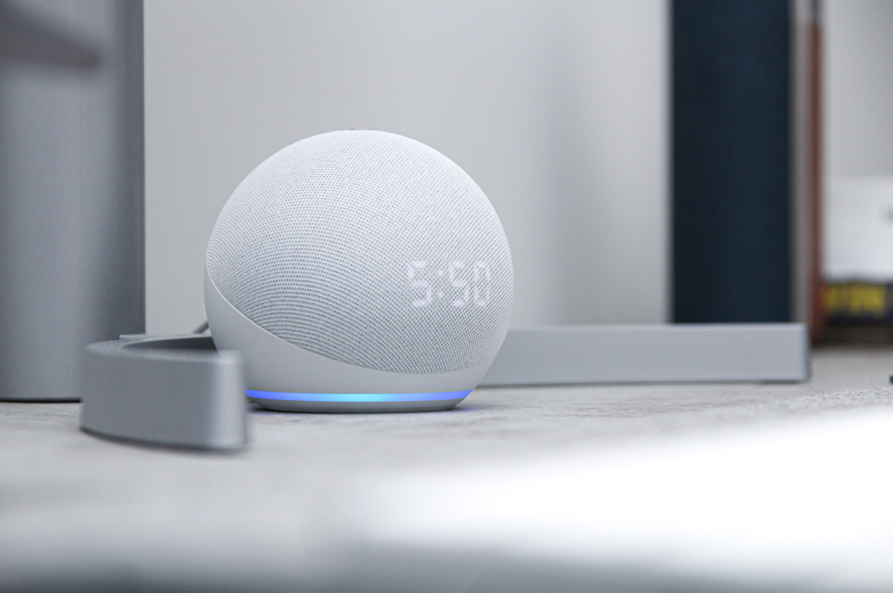

BANANA TALK
MINIONS great tiny little creatures from whom we can learn what is togetherness and humbleness .In the upper videos shows that how creative are these small creatures they fight they roam they create their own problem but never leave each other always laughing never make sense for them but enjoying does .These creature are damm funny as they do such things that is unexpected funny as well for their special language called 'banana language'.Learning their language can be fun try today by live peoject
ForMoreClickHostel dayz!!
June 19,2020unequivocally, it’s quite interesting to apprise everyone and at the same time seek the answer putting their mind into the state of churn and find out who’s know the hostel better. it’s quite interesting to let on everyone that I have added few fact based questions regarding individuals ,hostel and many more. it’s like playing quiz game things once you go through it and play the quiz game then based on your answers it would determine your score and position number.. so, rather than extravagantly wasting the precious time in Tête-à-Tête. time test your knowledge along with luck and pluck ,further more ,i would like to challenge or dare all the hostelite to come check out your preconceived knowledge whether its hold truism or not.
MCQS For Computers
 June 18,2020
June 18,2020
Do we really know the computer? This question might be appearing to many people that why such an odd question is being put forward which can be answered by a nursery kid. Such as computer is a machine which perform arithmetic and logical operation based on the input given to it.. but but , computer is much more beyond it , beyond and behind the theoretical definition the more you dig deeper the much more you find as we know devil is always found in details. So , my intention here is quite crystal clear to make you or everyone aware about the unknown facts about computer which hardly bother to novice learner or even freshers to be taken account. So without holding grudges against knowledge its high time to challenge oneself and gain the comparably comprehensive factual things about computer which will help to clear the persistently tearing apprehension.. so its time give a try.. so here you go everyone..
ForMoreClickMy Own WEBCAM
June 17,2020Think over again is you computer safe where the place you leave it How ever it's hard to think after having so much of passwords but what if you get to know that which person was trying to operate your computer in absense of your presence.For this a solution is here my Own WebCam use this and see the magic if a person tries to operate your computer it will start buzzing and the unknown person will be in your eyes and its diddicult for one to understand how to close that cam only a button can stop that cam.Why to wait lets give it a try.
ForMoreClickRomantic Alexa
 June 16,2020Feeling bored or your girlfrind left you instead of crying or thinking what to do it's better to try Romantic Alexa.It is the solution for your loneliness you can romance with her and in replies many secrets are there that you can enjoy.Talking about more functions It is capable of voice interaction, music playback, making to-do lists, setting alarms, streaming podcasts, playing audiobooks, and providing weather, traffic, sports, and other real-time information, such as news...
ForMoreClick